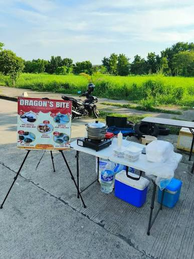
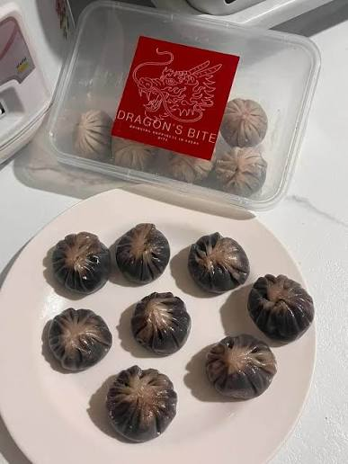

Dragon's Bite
Dragon's Bite gives you amazing quality taste of their tasty signature, Xiao Long Bao with lots of flavors, adding a lil bit of sweet and spice, for more menus, click our other tabs to learn more.
Dragon's Bite gives you amazing quality taste of their tasty signature, Xiao Long Bao with lots of flavors, adding a lil bit of sweet and spice, for more menus, click our other tabs to learn more.

Flavors:
Meats:

It all started by lovely couples, EJ and Janela's business from baking cookies in 2016 to making xiao long bao during late 2025. Later on added another menu, joining Grilling (Ihawan) foods today. Including Grilled pork/chicken and finally Grilled enoki mushrooms.
+63 932 192 7245
Phase 5, Sto. Niño, Bagbaguin, Meycauayan, Bulacan
Opens Mon-Fri | 4pm-12mn